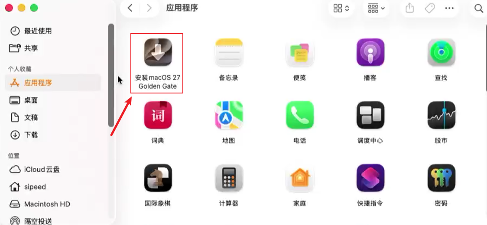
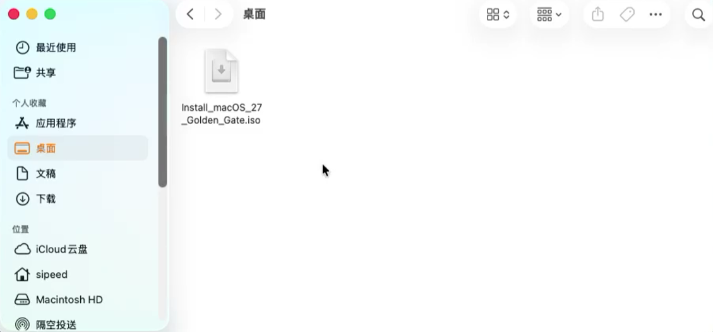
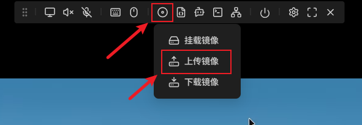
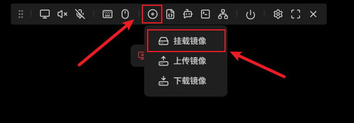
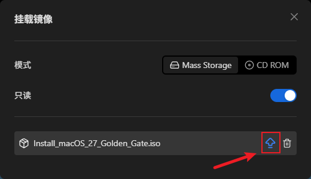
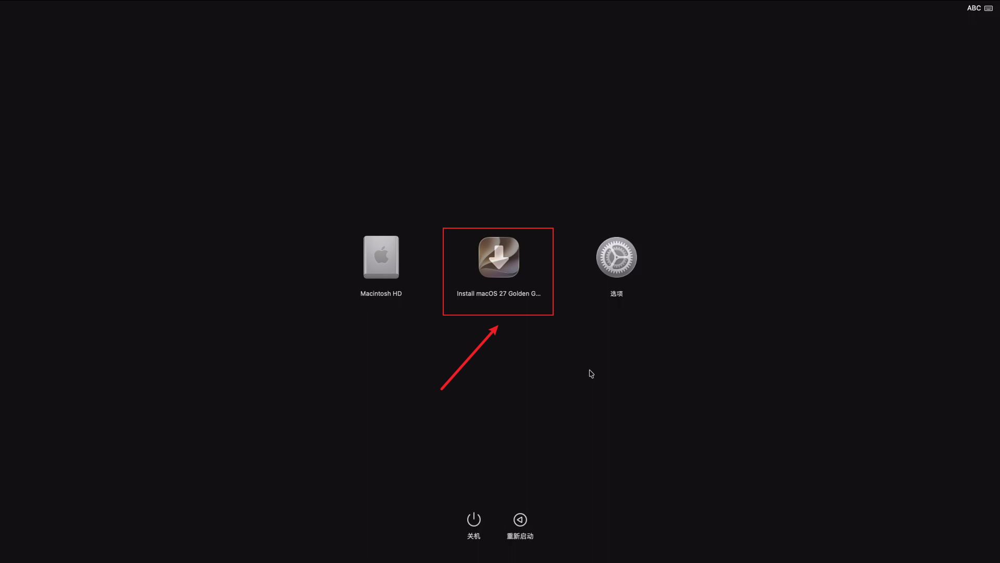

中文
中文重装 macOS 系统
更新历史
| 日期 | 版本 | 作者 | 更新内容 |
|---|---|---|---|
| 2026-09-20 | v0.1 | liangziyue |
|
简介
NanoKVM Pro 的 USB-C 端口会模拟一个 U 盘设备，可以把存放在 NanoKVM Pro 内的 ISO 镜像挂载给被控主机。本文介绍如何用这套功能给被控 Mac 重装 macOS：先在一台正常的 Mac 上把 Apple 官方安装器打包成可引导的 ISO，上传到 NanoKVM Pro，再挂载给被控 Mac，从该镜像启动完成安装。全程通过 NanoKVM Pro 操作，被控 Mac 不需要额外接显示器和键盘。
适合以下场景：
- 被控 Mac 无法正常进入系统（系统损坏、卡在启动画面、忘记密码等），需要重装或全新安装 macOS；
- 被控 Mac 已经可以启动，只想把系统恢复到出厂状态。
重装（尤其是抹盘后安装）会清空目标磁盘上的数据，请先确认数据已备份或不再需要。
本文示例使用 macOS 27（Golden Gate），其他版本参考更换 macOS 版本。
准备工作
| 项目 | 说明 |
|---|---|
| 制作镜像用的 Mac | 一台可以正常使用的 Mac，需要管理员密码（制作 ISO 要用 sudo），并预留充足的磁盘空间 |
| 网络环境 | 制作镜像的 Mac 需要联网下载安装器；NanoKVM Pro 需要能通过网络访问网页控制端 |
| NanoKVM Pro | 已完成上手指南中的接线与联网，可以正常登录控制端，参考 NanoKVM-Desk 上手指南 / NanoKVM-ATX 上手指南 |
| 被控 Mac | 将要重装系统的机器。不需要额外接显示器和键盘，画面与操作都通过 NanoKVM Pro 完成 |
| 连接线材 | HDMI 线、USB-C 数据线（NanoKVM Pro 的 HID/虚拟 U 盘口） |
磁盘空间说明：本文示例生成的 macOS 镜像约 18.45GB。制作过程中，安装器本体、临时文件和最终生成的 ISO 会同时占用空间，建议制作机上预留 50GB 左右的剩余空间（以实际占用为准）。
下载 macOS 完整安装器
在用于制作镜像的 Mac 上打开「终端」（Terminal），执行：
softwareupdate --fetch-full-installer --full-installer-version 27.0
--full-installer-version后面跟的是要下载的系统版本号，本文示例为27.0；- 该命令会下载完整的安装器（体积较大），下载时间取决于网络情况，请耐心等待，中途不要关闭终端；
- 必须是完整安装器（full installer），不能用 App Store 里的增量更新包。
下载完成后，安装器会出现在 /Applications 目录下，名称为：
/Applications/Install macOS 27 Golden Gate.app
可以在「访达」→「应用程序」中确认该安装器存在，双击图标可以查看版本信息（查看完请退出，不要继续安装）。

制作可引导 ISO 镜像
Apple 官方只提供 createinstallmedia（制作可引导 U 盘），不直接提供 ISO。这里使用开源工具 createinstalliso，它可以把下载好的安装器打包成可引导的 ISO 镜像。
- 下载脚本到
~/bin目录并赋予执行权限：
mkdir -p ~/bin && curl -fsSL https://raw.githubusercontent.com/BITespresso/createinstalliso/master/createinstalliso -o ~/bin/createinstalliso
chmod +x ~/bin/createinstalliso
- 以管理员权限运行脚本，把 ISO 生成到桌面：
sudo ~/bin/createinstalliso -i ~/Desktop --applicationpath /Applications/Install\ macOS\ 27\ Golden\ Gate.app
参数说明：
| 参数 | 含义 |
|---|---|
-i / --isodirectory |
ISO 的输出目录，本文为桌面 ~/Desktop |
--applicationpath / -a |
macOS 安装器 App 的路径，路径中带空格时需要用 \ 转义 |
执行后会提示输入管理员密码（输入时终端不显示字符），随后终端会打印制作进度。制作过程会进行挂载磁盘映像、转码等操作，耗时较长，请勿中断终端。
- 制作完成后，桌面上会出现生成的 ISO 文件：
~/Desktop/Install macOS 27 Golden Gate.iso
重命名 ISO 文件
把生成出来的 ISO 重命名，去掉文件名中的空格：
Install macOS 27 Golden Gate.iso
↓
Install_macOS_27_Golden_Gate.iso
文件名中带空格时，上传镜像可能会失败，所以这里先把空格换成下划线。
重命名后得到的 Install_macOS_27_Golden_Gate.iso 就是最终要上传的 macOS 镜像（本文示例生成的镜像大小约 18.45GB）。

上传镜像到 NanoKVM Pro
- 在浏览器中登录 NanoKVM Pro 的网页控制端；
- 点击控制栏上的光盘图标：
- 在弹出的菜单中选择
上传镜像：

- 选中上面制作好的
Install_macOS_27_Golden_Gate.iso，等待上传完成。
说明：
- 上传的镜像会保存在 NanoKVM Pro 的
/data目录中，可用空间约 21G。本文示例的 macOS 镜像约 18.45GB，可以存下，但剩余空间不多，建议不要同时存放多个大镜像； - 上传时间取决于局域网速度与 ISO 体积，请勿在上传过程中关闭页面或断开网络；
- NanoKVM Pro 内可以同时存放多个镜像，挂载时选择其中一个即可。
连接被控 Mac 并挂载镜像
- 在被控 Mac 关机的状态下，把 NanoKVM Pro 接到被控 Mac 上：
- HDMI-IN 接口连接到被控 Mac 的视频输出口（用于采集画面）；
- HID 接口连接到被控 Mac 的 USB 口（提供虚拟键鼠与虚拟 U 盘）；
- PWR 接口接到 5V1A 及以上的外接电源上（NanoKVM Pro 对电源要求略高，部分 Mac 的 USB 口在关机状态下不输出电源，建议不要直接插到 Mac 上取电）。
- 在网页控制端中，点击光盘图标，在弹出的菜单中选择
挂载镜像：

- 在挂载镜像的窗口中选中
Install_macOS_27_Golden_Gate.iso，点击该行右侧的按钮即可挂载。

- 挂载成功后，网页端一般会提示当前已挂载的镜像；此时被控 Mac 就相当于插上了一个包含 macOS 安装器的 U 盘。
让被控 Mac 从镜像启动
在关机状态下按住电源键不放，直到屏幕出现「正在载入启动选项」的界面再松开。
在启动选项界面中选中 NanoKVM Pro 挂载出来的安装介质 Install macOS 27 Golden Gate，即可进入安装环境。

该界面同时会列出内置磁盘 Macintosh HD 和 选项，选择 选项 也可以进入 macOS 恢复。
本文流程在搭载 Apple 芯片（M 系列芯片）的 Mac 上验证。
在安装界面完成安装
进入安装环境后，界面与 macOS 恢复一致，按提示选择「重新安装 macOS」并选中目标磁盘即可；如果需要全新安装，可以先在「磁盘工具」里抹掉目标磁盘。
抹掉磁盘会清除该磁盘上的所有数据，请务必确认已经备份。
安装过程中被控 Mac 会自动重启多次，此时不要断开 NanoKVM Pro、不要断电，等待安装完成即可。
更换 macOS 版本
本文示例为 macOS 27，如果要安装其他版本，只需替换版本号与安装器名称，例如：
# 1. 下载对应版本的完整安装器（版本号以 Apple 实际提供的为准）
softwareupdate --fetch-full-installer --full-installer-version 15.6
# 2. 生成 ISO（把安装器路径换成实际名称）
sudo ~/bin/createinstalliso -i ~/Desktop --applicationpath /Applications/Install\ macOS\ Sequoia.app
常见问题
被控 Mac 看不到挂载的安装镜像 / 无法从镜像启动
- 确认镜像已经挂载成功（网页端有成功提示）；
- 在网页端弹出镜像后重新点击挂载；
- 重新进入启动选项界面，手动选择挂载出来的安装介质。
上传镜像中断 / 上传后镜像不可用
重新上传；上传过程中请保持页面打开、网络稳定。上传完成后，可在 NanoKVM Pro 的网页终端中检查 /data 目录下是否存在完整的镜像文件。
网络不稳定，镜像反复上传失败
如果受网络波动影响，镜像通过网页端怎么也传不上去，可以改用 SSH 直接把镜像文件推送到 NanoKVM Pro 的 /data 目录：
- 在网页端的
设置→设备中开启SSH（NanoKVM-Pro 出厂默认关闭 SSH，需要先手动打开），Desk 版本也可以在屏幕上点击Settings→SSH开启； - 在制作镜像的 Mac 上执行：
rsync -avP ~/Desktop/Install_macOS_27_Golden_Gate.iso root@<NanoKVM-IP>:/data/
把 <NanoKVM-IP> 换成 NanoKVM Pro 的实际 IP。默认账号为 root，密码为 sipeed；如果在网页端改过密码，SSH 密码会同步更新。
-P 相当于 --partial --progress，会在进度中断时保留已经传输的部分，重新执行同一条命令即可继续，适合网络不稳定的情况。
推送完成后回到网页控制端，即可在镜像列表中看到它，后续挂载步骤与上文一致。